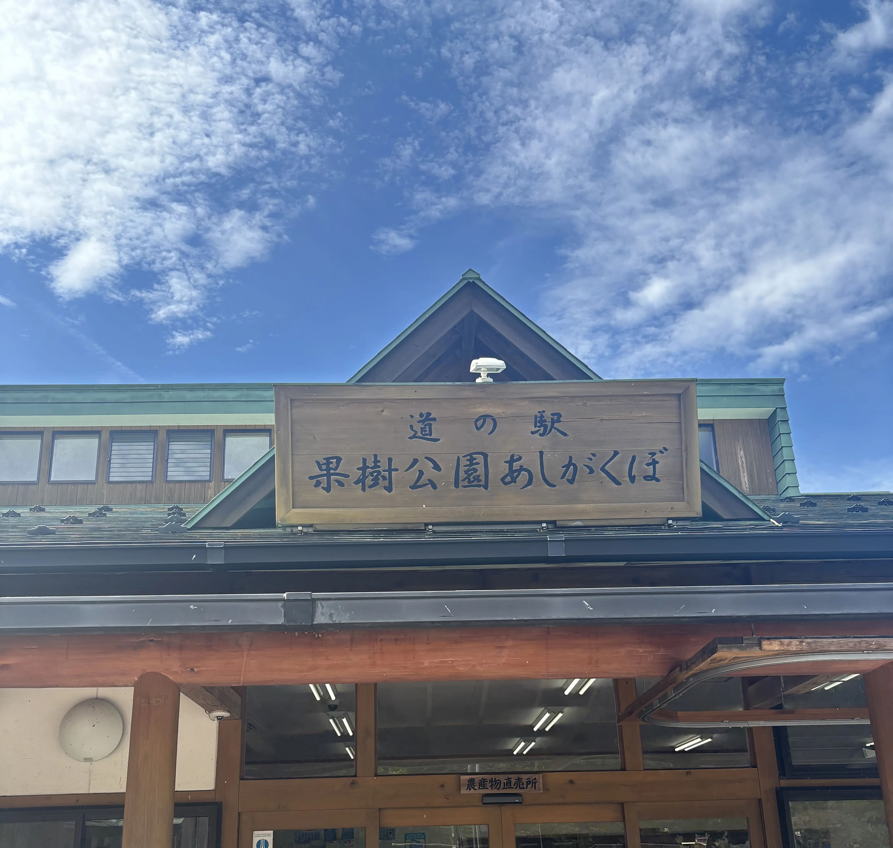

どこいこMap コラム
関東圏：おすすめ道の駅
執筆日：2026/06/14
もう直ぐバイク歴1年になる私が、今まで訪れた道の駅でおすすめな場所を紹介します!
- 関東圏で道の駅ツーリングをしたい方
- バイクで行きやすい休憩スポットを探している方
- ご当地グルメやソフトクリームも楽しみたい方
そんな方の参考になったら嬉しいです!
道の駅 果樹公園あしがくぼ （埼玉県秩父郡横瀬町）

ワインディングも楽しみながら訪れるならココ!
初めて山のツーリングに行った思い出の地でもあります!秋や冬は落ち葉注意かもです! カーブが多く続く道で向かうまでに楽しかったことを覚えてます。
到着すると、バイカーたくさんいて賑わってました!すごく人気な道の駅で、バイクも車も多くいました。
食堂やカフェ、パン屋さんなど充実しております。
ツーリングといえばソフトクリームなので、いただきました!紅茶のソフトクリームです!
ソフトクリーム最高ですね!
めちゃおいしかったです🥳
今回は食堂に行かなかったので、次回訪れた時はいただこうと思います!
山の中にあるので空気も澄んでいて、自然の中を走りながら楽しみました!
ワインディング多いですが、初心者の私でも楽しめました!
スポット情報
- 所在地：埼玉県秩父郡横瀬町
- 駐車場：あり
- おすすめ度：★★★★★
道の駅 果樹公園あしがくぼの公式サイトはこちら!
公式サイト
道の駅 さかい （茨城県猿島郡）

Google Mapで道の駅を探してたら見つけました!めちゃ綺麗な道の駅です!
こちらの道の駅は特におすすめで、グルメがたくさんあってお腹がもたない。。笑
私はジェラートが大好きなのですが、ここにはなんとジェラートヤヨイ東京が境店として入ってました!
フランボワーズXショコラをいただきました!
ショコラの甘さとフランボワーズの酸味が相性バッチリで美味しかったです!
また他のフレーバーも食べたいのでリピしなければ!
また、道の駅さかいには沖縄ショップがあります!
沖縄といえばこれ!という商品がたくさんあり、見てるだけで幸せ、ついつい買っちゃおうってなりました🥳
沖縄のお食事もできて魅力がいっぱいです!
沖縄そば、ポーク卵おにぎり、タコライス、サーターアンダギーなどなど。。🤤
沖縄のご飯が好きな人は通っちゃいますね!
また、ブルーシールアイスもあって感動しました!
さかいに来たらアイス難民になることはなく、逆にどれにしようか悩む悩民になりますね🫠
他にも魅力がたくさんある道の駅さかいにぜひ足を運んでみてください!
とてもおすすめです!
スポット情報
- 所在地：茨城県猿島郡
- 駐車場：あり
- おすすめ度：★★★★★
道の駅 さかいの公式サイトはこちら!
公式サイト
道の駅うつのみや ろまんちっく村 （栃木県宇都宮市）

スパや宿泊施設が併設されている道の駅です!
とても広くて、温泉も利用したら1日楽しめそうだなと思いました!
私が訪れた時は夕方だったのですが、それでも家族連れや観光客の方で賑わっていました。
敷地内には広場や遊べるスペースもあり、小さなお子さん連れでも楽しめそうです!
また、バーベキューができるエリアもあるようで、ツーリングだけでなくドライブの目的地としても良さそうだなと思いました。
私は道の駅に来ると必ずソフトクリームを探してしまうのですが、今回はレモン牛乳ソフトクリームをいただきました!
栃木といえばレモン牛乳ですよね!
これはおいしい🤤
さっぱりした甘さで食べやすく、ツーリング途中の休憩にもぴったりでした!
ちょっとすっぱい？って警戒してたのですが全然!スイーツです!
道の駅自体がとても広いので、少し散歩するだけでも楽しめます。
温泉や宿泊施設もあるので、ツーリングの休憩場所としてはもちろん、のんびり過ごしたい時にもおすすめの道の駅です!
スポット情報
- 所在地：栃木県宇都宮市
- 駐車場：あり
- おすすめ度：★★★★
道の駅うつのみや ろまんちっく村の公式サイトはこちら!
公式サイト
道の駅はツーリングとの相性よし!
道の駅は駐車場が広く、窮屈感がないので初心者の私は大好きな場所です笑
休憩もできて、ご当地グルメやお土産、その道の駅の名産品など楽しむことができるのでツーリングとの相性よし!
関東圏以外の道の駅に行ったらそこでの体験も書けたらいいなと思います!
「走りたいけど目的地が決まらない」 「まだ行ったことない場所を知りたい」 そんな日に、どこいこMapを使ってもらえたら嬉しいです!
どこいこMap では、 出発地と片道時間を選ぶだけで、目的地候補をランダムで提案します。
また次の記事を読んでいただけると嬉しいです!
© どこいこMap